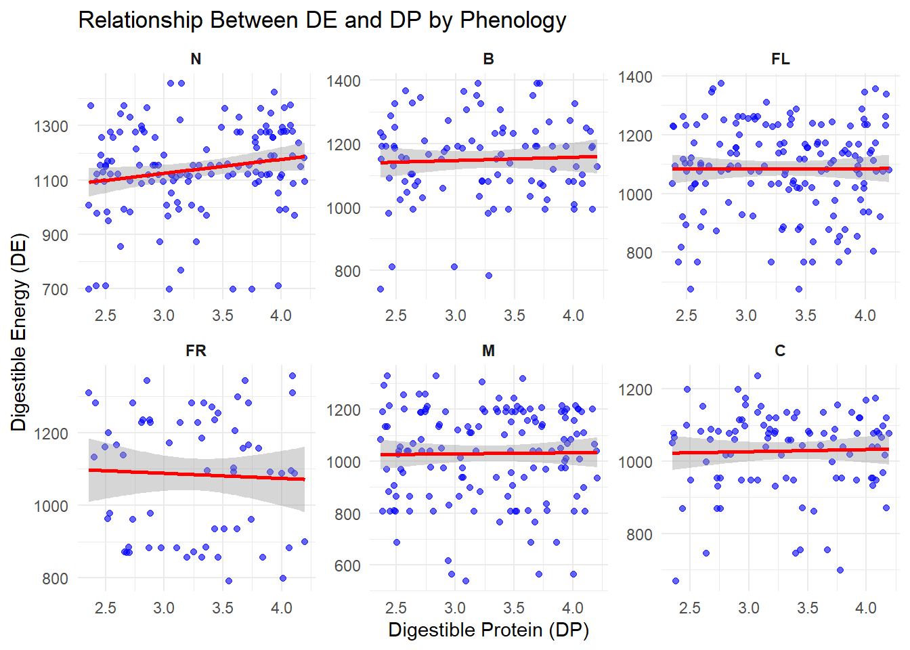
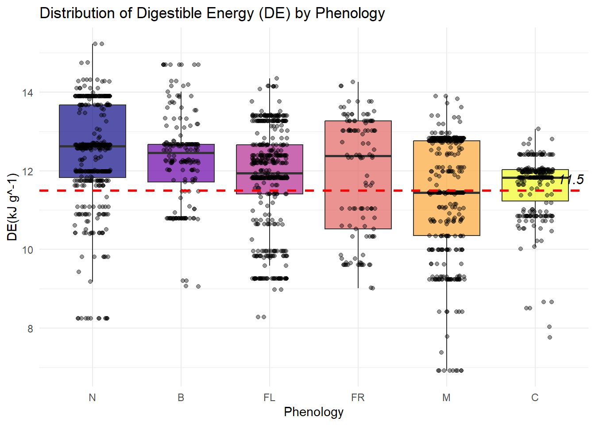
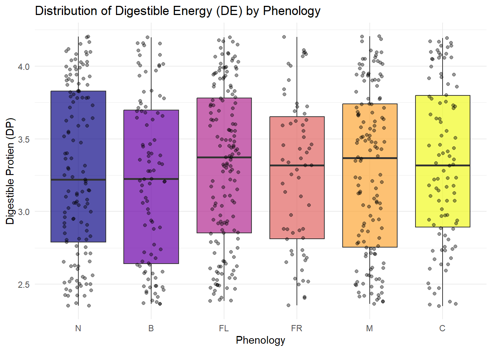
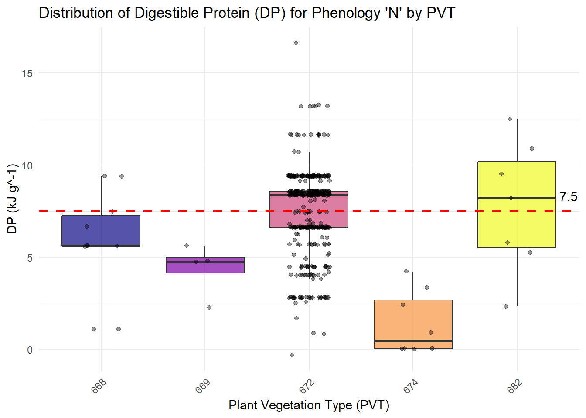
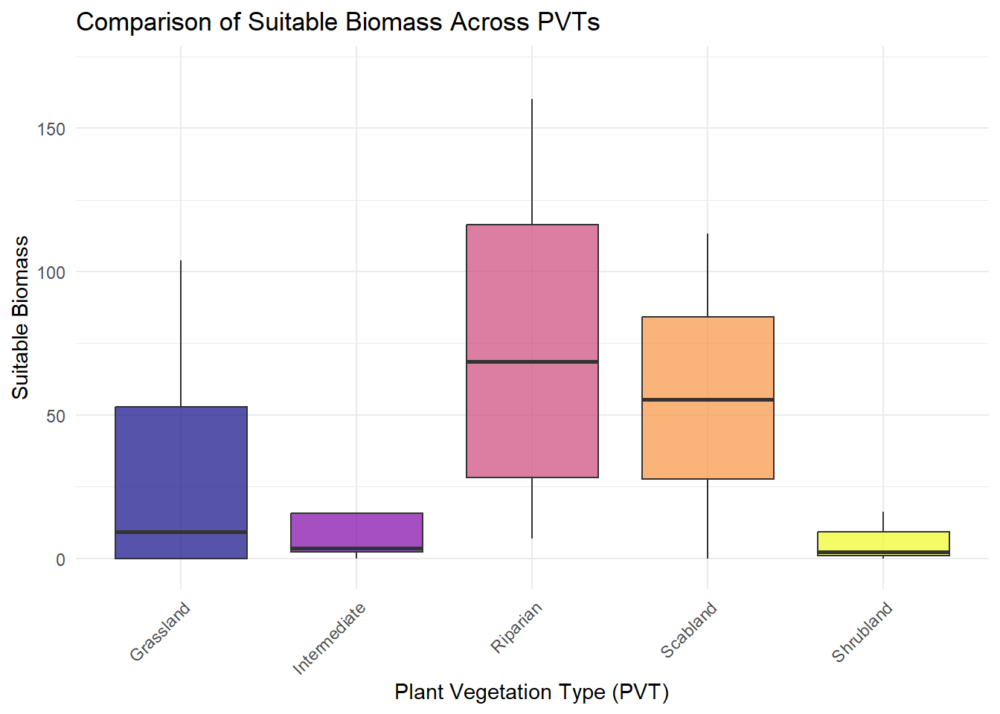
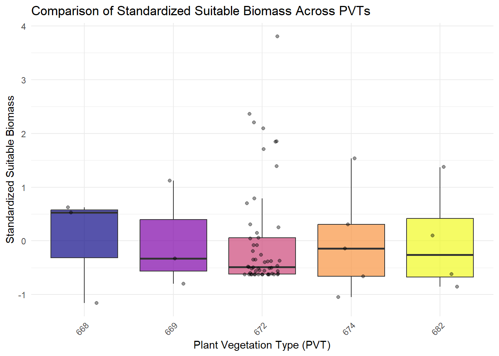
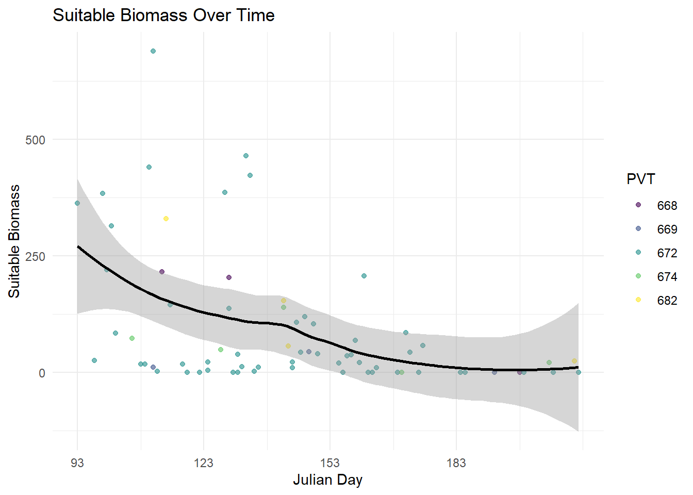
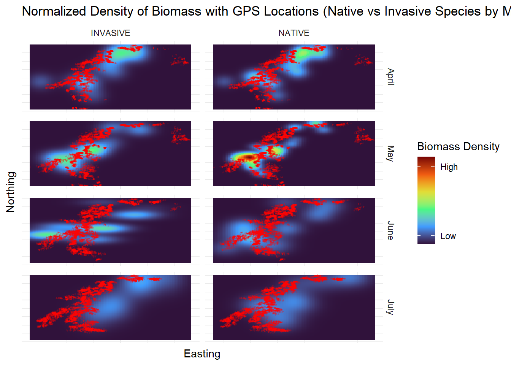

I will be using quality and biomass data to help visualize how forage quality changes throughout my study area over time.
Author
Alexis Means
Published
March 26, 2025
Project Description:
Understanding Bighorn Sheep Nutrition and Movement in the John Day Canyon
Located within the Columbia Plateau, the John Day Canyon is a steep, rugged landscape where sagebrush and grasses dominate the hillsides. This dynamic environment supports a unique population of bighorn sheep — one that, remarkably, has avoided the disease outbreaks that often devastate other herds.
My research focuses on understanding the nutritional requirements of these bighorn sheep and how those needs shift throughout their reproductive cycle due to changing metabolic demands. The ultimate goal is to develop a predictive model that links their nutritional requirements to movement patterns. By doing so, we can identify potential threats, such as areas where bighorn sheep may come into contact with domestic livestock, and pinpoint critical habitats essential for their survival.
To achieve this, I am collecting vegetation data to calculate a measure of “suitable biomass”—essentially, the portion of available forage that meaningfully contributes to the sheep’s energy needs at different reproductive stages. This metric is created using measures of digestible energy and digestible protein. I have currently not finalized my values of “suitable biomass” but I could look at the preliminary values of digestible energy and digestible protein. Eventually using this metric, I will develop a Generalized Additive Model (GAM) to map areas of high and low nutritional quality across the landscape.
These techniques will can help determine which resources most influence bighorn sheep movement and allow us to predict future movement patterns—a critical step in ensuring their continued success in this landscape. By bridging nutritional ecology with movement ecology, this research will contribute valuable insights into how bighorn sheep navigate their environment and help inform conservation strategies for this unique, disease-free population.
Data Wrangling
Code
library(lpSolve)library(openxlsx)library(tools)library(dplyr)library(sf)library(tidyverse)# Define the path to the directory containing the fileexcelpath <-"C:/Users/Alexis Means/Documents/Project/Nutrition Sampling/R code/FRESH/processed.data/"# Define the specific file namefilename <-"FRESH.test.data.xlsx"# Construct the full file pathexcel.file <-file.path(excelpath, filename)# Load the workbook and read the datalibrary(openxlsx)habitat <-loadWorkbook(excel.file)data <-data.frame(readWorkbook(excel.file, sheet ="FRESH Data", startRow =1, colNames =TRUE))plant <-read.csv("C:/Users/Alexis Means/Documents/Project/Nutrition Sampling/R code/Cleaning/processed.data/plant.csv")data <- data %>%rename(Code = Plant.Code) %>%left_join(y = plant, by ="Code",relationship ="many-to-one")
Quality Trends
With some of my quality data, I wanted to start by comparing the measurements of digestible energy (DE) and digestible protien (DP) between plant species and phenological stages that I observed while I was sampling. Mainly I want to observe if there is any correlation between high DE and high DP. After looking at the results of my scatter plots, it seems like there may be a slight positive trend in newly emergent plants and a slight downward trend in fruiting plants, but for the most part there is no correlation between digestible energy and digestible protein.
Code
library(tidyverse)data$Phenology <-factor(data$Phenology, levels =c("N", "B", "FL", "FR", "M", "C"))ggplot(data, aes(x = DP, y = DE)) +geom_point(color ="blue", alpha =0.6) +geom_smooth(method ="lm", se =TRUE, color ="red") +# Linear trend linelabs(title ="Relationship Between DE and DP by Phenology",x ="Digestible Protein (DP)",y ="Digestible Energy (DE)") +theme_minimal() +# Set phenology as a factor with a specific orderfacet_wrap(~ Phenology, scales ="free") +scale_x_continuous(expand =c(0.05, 0)) +# Adjust spacingscale_y_continuous(expand =c(0.05, 0)) +theme(strip.text =element_text(face ="bold")) # Bold facet labels

To better visualize the trends in DP and DE between different phenological stages. I isolated the DE and DP and values to compare each state. The DE values are what I expected to see, with the highest being in the new and budding stages and then gradually decreasing, however the DP does not follow this trend.
Code
# Ensure Phenology is a factor with the correct orderdata$Phenology <-factor(data$Phenology, levels =c("N", "B", "FL", "FR", "M", "C"))ggplot(data, aes(x = Phenology, y = DE, fill = Phenology)) +geom_boxplot(alpha =0.7, outlier.shape =NA) +geom_jitter(width =0.2, alpha =0.4, color ="black") +scale_fill_viridis_d(option ="plasma") +labs(title ="Distribution of Digestible Energy (DE) by Phenology",x ="Phenology",y ="DE(kJ g^-1)") +theme_minimal() +theme(legend.position ="none")+geom_hline(yintercept =11.5, linetype ="dashed", color ="red", size =1)+annotate("text", x =6.4, y =11.8, label ="11.5", color ="black", size =4, fontface ="italic")

Code
ggplot(data, aes(x = Phenology, y = DP, fill = Phenology)) +geom_boxplot(alpha =0.7, outlier.shape =NA) +# Boxplot without outlier pointsgeom_jitter(width =0.2, alpha =0.4, color ="black") +# Add jitter for visibilityscale_fill_viridis_d(option ="plasma") +# Use a color palettelabs(title ="Distribution of Digestible Energy (DE) by Phenology",x ="Phenology",y ="DP (g protien/100g forage)") +theme_minimal() +theme(legend.position ="none")+geom_hline(yintercept =7.5, linetype ="dashed", color ="red", size =1)+annotate("text", x =6.5, y =7.7, label ="7.5", color ="black", size =4, fontface ="italic")

Biomass Trends
One of the key parts of my project is understanding the spread of invasive species throughout the canyon, specifically cheat grass. When observing the canyon it seems like cheat grass dominates the canyon which could effect the amount of nutrients available later in the summer. To start I wanted to looks at the density of biomass for all native vs invasive species within the transects that I sampled in our study area. From this graph we can see that overall biomass of native and invasive species is relatively similar throughout the canyon. However, there is an overall greater density of native species.
Code
spp.map <- data %>%select(TransectID, Code, Phenology, Part, Biomass, Duration, Status)plot <-read.csv("C:/Users/Alexis Means/Documents/Project/Nutrition Sampling/R code/Cleaning/processed.data/transect.csv")spp.map <- spp.map %>%rename(PlotID = TransectID)spp.map <- spp.map %>%left_join(y = plot,by ="PlotID",relationship ="many-to-one")spp.map <- spp.map %>%rename(Lat = BeginLat,Long = BeginLong,Easting = BeginUTM_Easting,Northing = BeginUTM_Northing) %>%select(PlotID, Code, Phenology, Part, Biomass, Duration, Status, Julian_Day, Lat, Long, Easting, Northing)# Create an sf object with the Lat and Long columnsspp.map_UTM <-st_as_sf(spp.map, coords =c("Long", "Lat"), crs =4326) # EPSG:4326 is WGS84# Convert to UTM Zone 11N (EPSG:26911)spp.map_UTM <-st_transform(spp.map_UTM, crs =32611)# Extract UTM coordinates (Easting and Northing)spp.map$Easting <-st_coordinates(spp.map_UTM)[, 1]spp.map$Northing <-st_coordinates(spp.map_UTM)[, 2]
Code
# Load necessary librarieslibrary(tidyverse)# Summarize biomass weight by spatial location and species statusspp.summary <- spp.map %>%filter(!is.na(Biomass) & Biomass >0) # Remove NAsggplot(spp.summary, aes(x = Easting, y = Northing, weight = Biomass)) +stat_density_2d(aes(fill =after_stat(density)), geom ="raster", contour =FALSE) +facet_wrap(~ Status) +# Separate maps for Native/Invasivescale_fill_viridis_c(name ="Biomass Density", option ="turbo",breaks =c(1e-09, 5e-09), # Define specific density valueslabels =c("Low (1e-09)", "High (5e-09)") # Replace numerical values with "Low" and "High" ) +labs(title ="Density of Biomass (Native vs Invasive Species)",x ="Easting", y ="Northing") +theme_minimal() +theme(axis.text =element_blank(), # Remove tick labelsaxis.ticks =element_blank()) # Rotate x-axis labels
I still do not have complete quality data, so there is only so much I can do with this information, but knowing the amount of biomass for each species in the area will allow us to apply a nutrient value of “suitable biomass” when I finally have those values. I would also like to see the differences in overall biomass for each month. I had a much larger sample size in April and May than I did in June and July, so I standardized my biomass values before plotting them.
Code
month.sum <- spp.map %>%filter(!is.na(Biomass) & Biomass >0) %>%# Remove NAsmutate(Month =case_when( Julian_Day >=93& Julian_Day <124~"April", Julian_Day >=124& Julian_Day <155~"May", Julian_Day >=155& Julian_Day <185~"June", Julian_Day >=185& Julian_Day <=212~"July",TRUE~NA_character_ )) %>%filter(!is.na(Month)) %>%mutate(Month =factor(Month, levels =c("April", "May", "June", "July")))# Normalize biomass within each month (to make sample sizes comparable)month.sum <- month.sum %>%group_by(Month) %>%mutate(Total_Biomass =sum(Biomass), # Calculate total biomass for each monthNormalized_Biomass = Biomass / Total_Biomass) %>%# Normalize biomassungroup() # Remove grouping# Create density plot faceted by Month and Statusggplot(month.sum, aes(x = Easting, y = Northing, weight = Normalized_Biomass)) +stat_density_2d(aes(fill =after_stat(density)), geom ="raster", contour =FALSE) +facet_grid(Month ~ Status) +# Grid facet by Month (rows) and Status (columns)scale_fill_viridis_c(name ="Biomass Density", option ="turbo",breaks =c(2e-09, 11e-09), # Define specific density valueslabels =c("Low (2e-09)", "High (11e-09)") # Replace numerical values with "Low" and "High" ) +labs(title ="Normalized Density of Biomass (Native vs Invasive Species by Month)",x ="Easting", y ="Northing") +theme_minimal() +theme(axis.text =element_blank(), # Remove tick labelsaxis.ticks =element_blank())

Since cheat grass is the main issue that we have been observing as far as the most invasive species in the canyon I would also like to see how this biomass progresses over each month. Apparently in this subset of my data I didn’t have any observations for cheatgrass in the month of June. This makes me think that I should take the rest of my results with a grain of salt until I can complete my biomass predictions. That being said the density of biomass for cheat grass did peak in the southern end of the canyon in June and then started to decrease after that point.
Code
# Filter for observations with Species Code "BRTE"cheat.sum <- spp.map %>%filter(!is.na(Biomass) & Biomass >0, Code =="BRTE") %>%# Remove NAs and filter for "BRTE"mutate(Month =case_when( Julian_Day >=93& Julian_Day <124~"April", Julian_Day >=124& Julian_Day <155~"May", Julian_Day >=155& Julian_Day <185~"June", Julian_Day >=185& Julian_Day <=212~"July",TRUE~NA_character_ )) %>%filter(!is.na(Month)) %>%mutate(Month =factor(Month, levels =c("April", "May", "June", "July"))) # Set correct order# Normalize biomass within each month (to make sample sizes comparable)cheat.sum <- cheat.sum %>%group_by(Month) %>%mutate(Total_Biomass =sum(Biomass), # Calculate total biomass for each monthNormalized_Biomass = Biomass / Total_Biomass) %>%# Normalize biomassungroup() # Remove grouping# Create density plot faceted by Month and Status for species "BRTE"ggplot(cheat.sum, aes(x = Easting, y = Northing, weight = Normalized_Biomass)) +stat_density_2d(aes(fill =after_stat(density)), geom ="raster", contour =FALSE) +facet_grid(Month ~ Code) +# Grid facet by Month (rows) and Status (columns)scale_fill_viridis_c(name ="Biomass Density", option ="turbo",breaks =c(1e-09, 7e-09), # Define specific density valueslabels =c("Low (1e-09)", "High (7e-09)") # Replace numerical values with "Low" and "High" ) +labs(title ="Normalized Density of Biomass for BRTE by month",x ="Easting", y ="Northing") +theme_minimal() +theme(axis.text =element_blank(), # Remove tick labelsaxis.ticks =element_blank())

GPS Data
Lastly, I want to see how the sheep movements change each month with the overall biomass of both native and invasive species. I started out by creating a heat map of our overall sheep location use throughout the canyon.
Code
gps <-read.csv("C:/Users/Alexis Means/Documents/Project/Demographics/Code/cleaned.data/sheep_clean_24.csv")gps <- gps %>%rename(Easting = x_,Northing = y_)# Step 1: Kernel Density Estimation (KDE) for GPS datagps_kde <-ggplot(gps, aes(x = Easting, y = Northing)) +stat_density_2d(aes(fill =after_stat(density)), geom ="raster", contour =FALSE) +scale_fill_viridis_c(option ="inferno",name ="GPS Use Density",breaks =c(2e-09, 10e-09), # Define specific density valueslabels =c("Low (2e-09)", "High (10e-09)") # Replace values with "Low" and "High" ) +labs(title ="Sheep Area Use")+theme_minimal()+theme(axis.text =element_blank(), # Remove tick labelsaxis.ticks =element_blank()) plot(gps_kde)

If the areas of high biomass density align with values of high nutrient quality in theory this means that the density of our sheep points should also follow the trends of high biomass density in the months of April and May. I wanted to see if I could overlay our sheep locations each month with the biomass density data each month to observe my hunch that sheep would follow this trend in these months. They do not appear to follow this trend, most likely due to other outside factors such as selection for escape terrain that outweigh the need to follow vegetation trends.
Code
month.sum <- spp.map %>%filter(!is.na(Biomass) & Biomass >0) %>%# Remove NAsmutate(Month =case_when( Julian_Day >=93& Julian_Day <124~"April", Julian_Day >=124& Julian_Day <155~"May", Julian_Day >=155& Julian_Day <185~"June", Julian_Day >=185& Julian_Day <=212~"July",TRUE~NA_character_ )) %>%filter(!is.na(Month)) %>%mutate(Month =factor(Month, levels =c("April", "May", "June", "July")))# Normalize biomass within each month (to make sample sizes comparable)month.sum <- month.sum %>%group_by(Month) %>%mutate(Total_Biomass =sum(Biomass), # Calculate total biomass for each monthNormalized_Biomass = Biomass / Total_Biomass) %>%# Normalize biomassungroup() # Remove grouping# Extract month from the GPS timestampgps <- gps %>%mutate(Month =case_when(month(t_) ==4~"April",month(t_) ==5~"May",month(t_) ==6~"June",month(t_) ==7~"July",TRUE~NA_character_ )) %>%filter(!is.na(Month)) %>%mutate(Month =factor(Month, levels =c("April", "May", "June", "July")))ggplot() +# Biomass density heatmap using kernel density estimationstat_density_2d(data = month.sum,aes(x = Easting, y = Northing, weight = Normalized_Biomass, fill =after_stat(density)),geom ="raster",contour =FALSE ) +facet_grid(Month ~ Status) +# Grid facet by Month (rows) and Status (columns)scale_fill_viridis_c(name ="Biomass Density", option ="turbo",breaks =c(2e-09, 11e-09), # Define specific density valueslabels =c("Low (2e-09)", "High (11e-09)") # Replace numerical values with "Low" and "High" ) +labs(title ="Normalized Density of Biomass with GPS Locations (Native vs Invasive Species by Month)",x ="Easting", y ="Northing") +theme_minimal() +theme(axis.text =element_blank(), # Remove tick labelsaxis.ticks =element_blank()) +# Overlay GPS points, filtering by Month to match the facetgeom_point(data = gps, aes(x = Easting, y = Northing), color ="red", alpha =0.1, size =0.4 )

Code
# Define the path to the directory containing the fileexcelpath <-"C:/Users/Alexis Means/Documents/Project/Nutrition Sampling/R code/FRESH/processed.data/"# Define the specific file namefilename <-"2024.test.suitable.biomass.xlsx"# Construct the full file pathexcel.file <-file.path(excelpath, filename)# Load the workbook and read the datahabitat <-loadWorkbook(excel.file)suitable <-data.frame(readWorkbook(excel.file, sheet ="Plot-Level-Summary", startRow =1, colNames =TRUE))suitable.map <- suitable %>%rename(PlotID = TransectID) %>%left_join(y = plot,by ="PlotID")suitable.map <- suitable.map %>%rename(Lat = BeginLat,Long = BeginLong,Easting = BeginUTM_Easting,Northing = BeginUTM_Northing) %>%select(PlotID, TotalDE, TotalDP, SuitableBiomass, AveDE, AveDP, Julian_Day, Lat, Long, Easting, Northing)View(suitable.map)# Create an sf object with the Lat and Long columnssuitable.map_UTM <-st_as_sf(suitable.map, coords =c("Long", "Lat"), crs =4326) # EPSG:4326 is WGS84# Convert to UTM Zone 11N (EPSG:26911)suitable.map_UTM <-st_transform(suitable.map_UTM, crs =32611)# Extract UTM coordinates (Easting and Northing)suitable.map$Easting <-st_coordinates(suitable.map_UTM)[, 1]suitable.map$Northing <-st_coordinates(suitable.map_UTM)[, 2]
Suitable Biomass
After completing the FRESH model with synthetic values for crude protein using a subset of my data, I was able to get estimates of usable suitable biomass available at each transect that I sampled. I replicated similar graphs to my biomass density for native vs invasive species and the results are fairly similar.Like the biomass plots, there is a higher density in the south end of our study area when looking at the suitable biomass overall for the study area.
#|warning: FALSEsuitablemonth.sum <- suitable.map %>%filter(!is.na(SuitableBiomass) & SuitableBiomass >0) %>%# Remove NAsmutate(Month =case_when( Julian_Day >=93& Julian_Day <124~"April", Julian_Day >=124& Julian_Day <155~"May", Julian_Day >=155& Julian_Day <185~"June", Julian_Day >=185& Julian_Day <=212~"July",TRUE~NA_character_ )) %>%filter(!is.na(Month)) %>%mutate(Month =factor(Month, levels =c("April", "May", "June", "July")))# Normalize biomass within each month (to make sample sizes comparable)suitablemonth.sum <- suitablemonth.sum %>%group_by(Month) %>%mutate(Total_SuitableBiomass =sum(SuitableBiomass), # Calculate total biomass for each monthNormalized_SuitableBiomass = SuitableBiomass / Total_SuitableBiomass) %>%# Normalize biomassungroup() # Remove grouping# Create density plot faceted by Month and Statusggplot(suitablemonth.sum, aes(x = Easting, y = Northing, weight = Normalized_SuitableBiomass)) +stat_density_2d(aes(fill =after_stat(density)), geom ="raster", contour =FALSE) +facet_grid("Month") +# Grid facet by Month (rows) and Status (columns)scale_fill_viridis_c(name ="Suitable Biomass Density", option ="turbo",breaks =c(1e-09, 6e-09), # Define specific density valueslabels =c("Low (1e-09)", "High (6e-09)") # Replace numerical values with "Low" and "High" ) +labs(title ="Normalized Density of Suitable Biomass",x ="Easting", y ="Northing") +theme_minimal() +theme(axis.text =element_blank(), # Remove tick labelsaxis.ticks =element_blank())
Warning: The following aesthetics were dropped during statistical transformation:
weight.
ℹ This can happen when ggplot fails to infer the correct grouping structure in
the data.
ℹ Did you forget to specify a `group` aesthetic or to convert a numerical
variable into a factor?
The following aesthetics were dropped during statistical transformation:
weight.
ℹ This can happen when ggplot fails to infer the correct grouping structure in
the data.
ℹ Did you forget to specify a `group` aesthetic or to convert a numerical
variable into a factor?
The following aesthetics were dropped during statistical transformation:
weight.
ℹ This can happen when ggplot fails to infer the correct grouping structure in
the data.
ℹ Did you forget to specify a `group` aesthetic or to convert a numerical
variable into a factor?
The following aesthetics were dropped during statistical transformation:
weight.
ℹ This can happen when ggplot fails to infer the correct grouping structure in
the data.
ℹ Did you forget to specify a `group` aesthetic or to convert a numerical
variable into a factor?

When looking at the density of suitable biomass month by month, May still has the highest density of suitable biomass. While this is most likely the month with the largest amount of species in their nutrient dense phase, it is also the month that we sampled the most. So I feel like the sampling efforts may be slightly skewing my data.
In order to truly see these values accurately represented across my study area, I will need to start creating my predictive GAM. This will allow me to project these values of suitable biomass to other 30x30m pixels with similar covariates and predict how vegetative quality changes throughout the canyon in different times of the year.